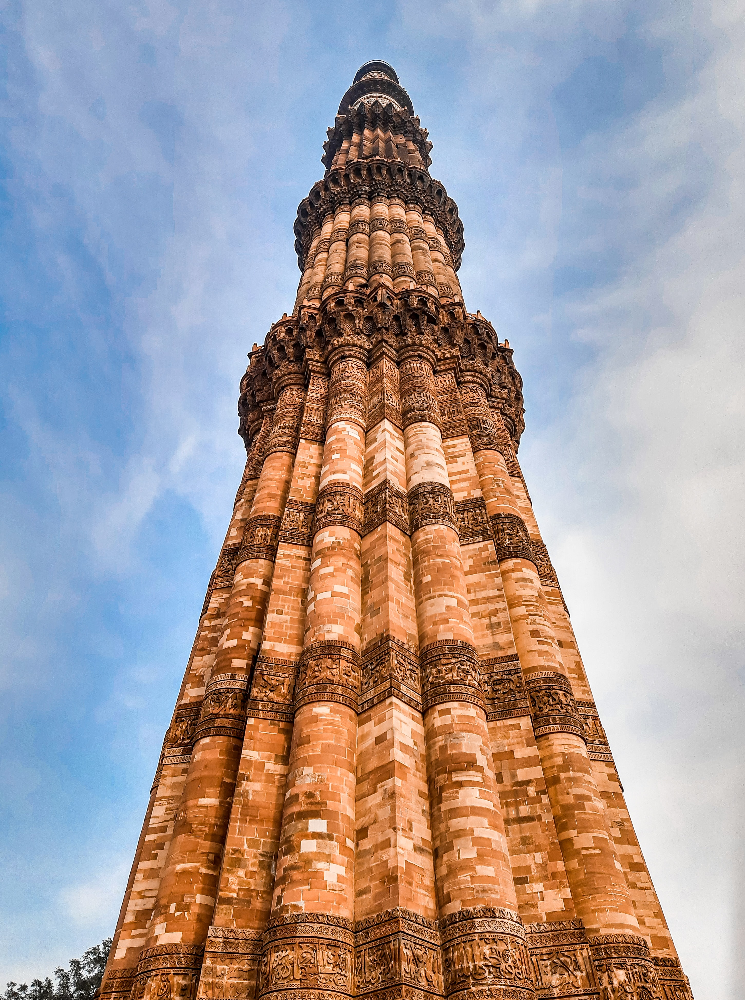

- References of Ayodhya are also contained in the Athar Veda. Also, Jain traditions claim that five Tirthankaras were born at Ayodhya.
- Ayodhya or Awadhpuri, the birthplace of Lord Rama has been regarded as the first one of the seven most important pilgrimage sites or Mokshdayini Sapt Puris for Hindus.
Ayodhya is a city located in Uttar Pradesh, India, that holds significant religious and cultural importance for both Hindus and Muslims. It is believed to be the birthplace of Lord Rama, a Hindu deity, and was the site of the Babri Mosque before its demolition in 1992. The conflict over the ownership of the site has been a source of tension between the two communities for decades, and the Supreme Court of India ruled in November 2019 that the land should be given to a trust to build a Hindu temple. Despite its controversial history, Ayodhya remains an important pilgrimage destination and attracts thousands of visitors every year. There are several transportation options available to reach Ayodhya, including air, train, bus, and car. The best time to visit Ayodhya depends on the purpose of the visit, but it is advisable to avoid peak tourist season.
The best time to visit Ayodhya for religious pilgrims is during festivals such as Ram Navami. For history and culture enthusiasts, the months of October to March offer pleasant weather for sightseeing. It is busy year-round, with larger crowds during festivals and holidays, so off-season visits may be preferable for a more peaceful trip.
Ayodhya is a city located in Uttar Pradesh, India, and is well connected to major cities in the region through various transportation options.
By Air:
The nearest airport to Ayodhya is the Babatpur Airport in Lucknow, which is approximately 135 km away. From the airport, visitors can take a taxi or a bus to reach Ayodhya. Taxis are readily available outside the airport, and the journey takes about 2-3 hours.
By Bus:
There are regular bus services from Lucknow and other nearby cities to Ayodhya. The Uttar Pradesh State Road Transport Corporation operates a number of buses that connect Ayodhya to nearby cities and towns.
By Car:
Visitors can also rent a car or drive to Ayodhya, as it is well connected to the major cities by road. There are a number of rental car companies in Lucknow, as well as in other nearby cities, that provide vehicles for hire.
By Train:
Ayodhya has its own railway station and is well connected to major cities in India, such as Lucknow, Varanasi, and Delhi, among others. The railway station is located in the heart of the city, making it convenient for travelers.
There are several options for accommodation near Ayodhya, Uttar Pradesh, India. These include:
Hotels: There are a number of budget and luxury hotels in the city, catering to different needs and preferences of travelers.
Guesthouses: For those looking for a more affordable option, there are several guesthouses near Ayodhya.
Dharamshalas: There are several dharamshalas (religious hostels) in Ayodhya, providing basic accommodation for pilgrims and visitors.
Home stays: Visitors can also opt for homestays, where they can experience local hospitality and stay with a local family.
It is advisable to book your accommodation in advance, especially during peak pilgrimage season.

Moment of Estacy!!!
The birthplace of Ram, intensely guarded . A long walk to the main temple post a lot of check. Remember deposit mobiles , any sweet boxes, watch at the deposit counter .
~ Binoy
More....